AI ช่วยดู แพทย์เป็นคนตัดสิน
การให้เกรดต้องตรวจย้อนได้ / AI ช่วยได้ แต่ต้องไม่ตัดสินแทน
Retinal Review Workbench: คัดกรองและทำ label วิจัยในที่เดียว
ภาพ Ultra-widefield (UWF) จากผู้ป่วยที่ให้ consent แล้ว / ชื่อไฟล์เปลี่ยนเป็น DEMO
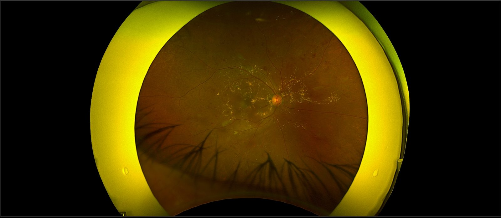
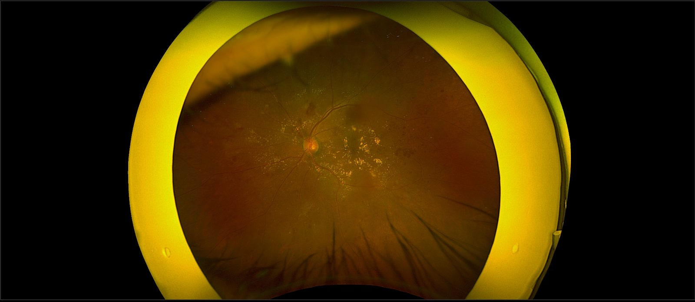
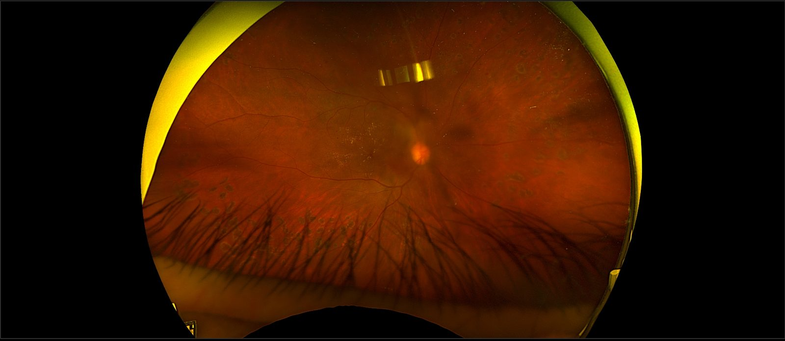
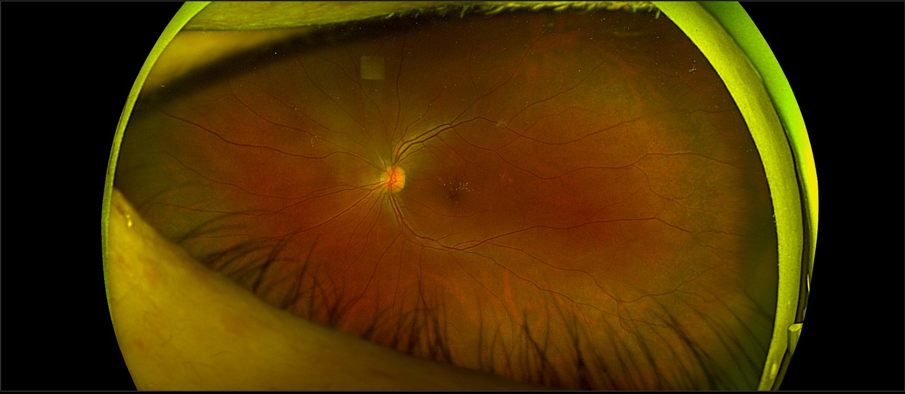
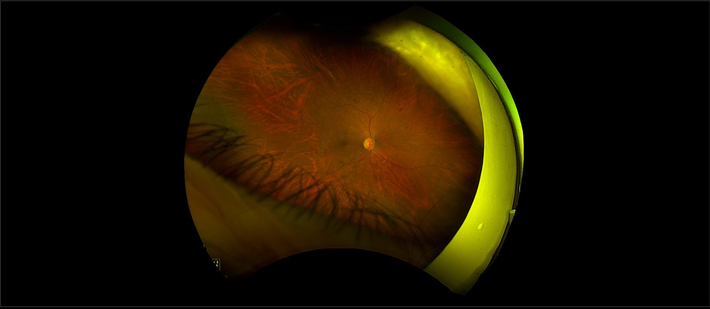
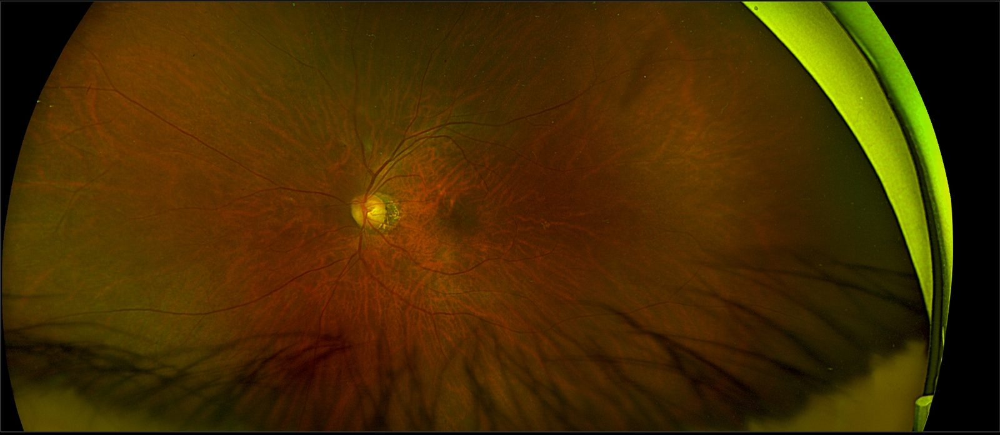
ทุกคนอ่านได้ / server ปฏิเสธการเขียนที่ role ไม่มีสิทธิ์ และบันทึกว่าใครทำอะไร
นำเข้าภาพ สั่ง AI
เกรดเบื้องต้นในรายงาน
ยืนยันหรือแก้ DR grade
เลือก Refer / Not refer แล้วเซ็น
ทำได้ทุกอย่างของแพทย์
Gold-100 แบบ blind
research export
ไม่เห็นชื่อผู้ป่วยและ HN
บัญชีและนโยบาย sign-in
AI server และ consent
Browser, review app, PostgreSQL และ AI server
Hospital model server หรือ team server dr-train / ไม่มี AI ก็ยังให้เกรดเองได้
ทุก request ผ่าน HTTPS และ sign-in ก่อนถึงข้อมูล
ทุกการเขียนส่ง revision ถ้ามีคนแก้ก่อน จะได้ 409 Case changed; reload
profile ผิดชุด app ไม่ start / PostgreSQL ล่มไม่สลับไป SQLite / ไม่มี AI เข้า manual mode
Confirm Image: CFP หรือ UWF ก่อน AI ทำงาน
UWF ไป USPEC / CFP ไป RETFound
ช่วยหารอยโรค ไม่ให้ DR grade / ผลไม่แน่นอนไม่ส่งซ้ำ
คะแนนของ model ไม่ได้ calibrate จึงไม่ใช่ความน่าจะเป็น
Original image / source SHA
crop, resize หรือ mask แล้วได้ SHA ใหม่
พิกัดตอนนี้ยังเป็นของภาพวิเคราะห์
กรอบจึงอยู่ตรงตำแหน่งเดิมบนภาพต้นฉบับ
เปิดเมื่อมีไฟล์บัญชีผู้ใช้ / server ตรวจสิทธิ์ทุกครั้งที่เขียน
อ่านเฉพาะโฟลเดอร์ input ชั้นบนสุด / JPEG, PNG, TIFF, DICOM
ไฟล์ซ้ำรวมเป็น alias / ต้นฉบับไม่ถูกย้าย ไม่ถูกแก้
ข้อมูลขัดกัน ระบบไม่ตัดสินเอง คนเป็นคนเลือก
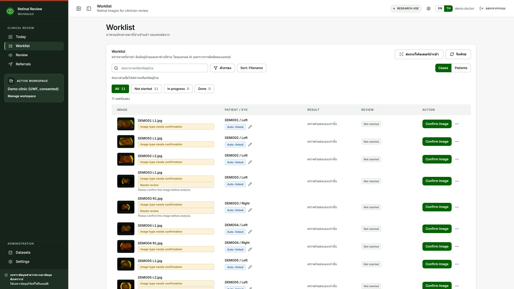
คนยืนยันชนิดภาพ คุณภาพ และตาข้าง
คะแนนไม่ใช่ความน่าจะเป็นทางคลินิก
Confirm DR Grade: ยอมรับ หรือแก้
ผล AI ที่มาทีหลังไม่ล้างเกรดที่ยืนยันแล้ว
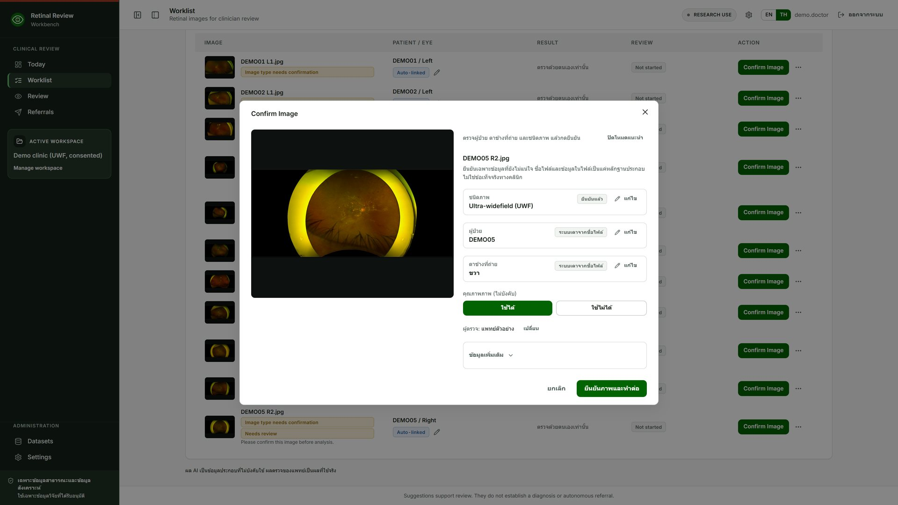
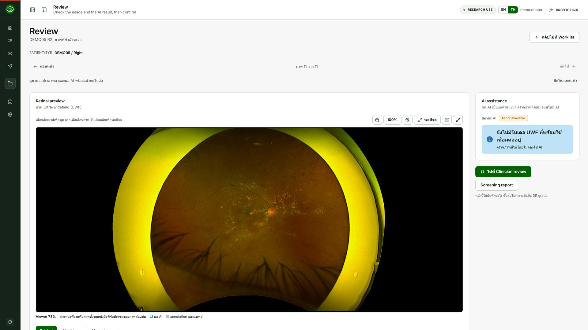
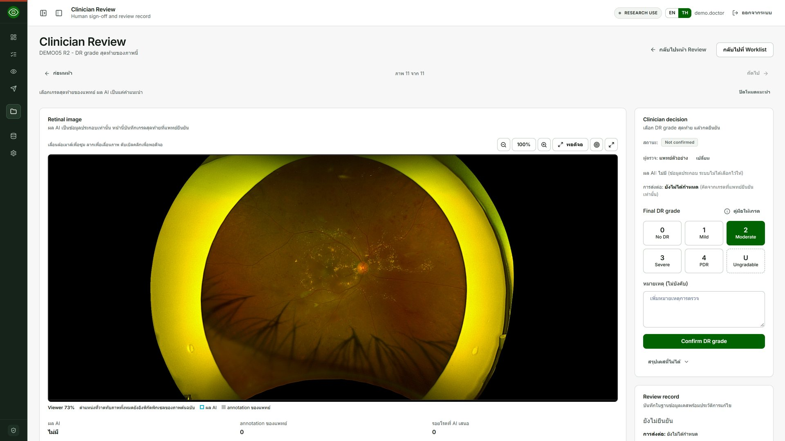
กรอบประคือ AI suggestion ยังไม่ใช่ผลของคน
ทุกการตัดสินถูกบันทึกต่อท้าย ผล AI ดิบไม่ถูกแก้
ไม่มี finding คือ reviewed none found ไม่ใช่ label ว่าไม่มีรอยโรค
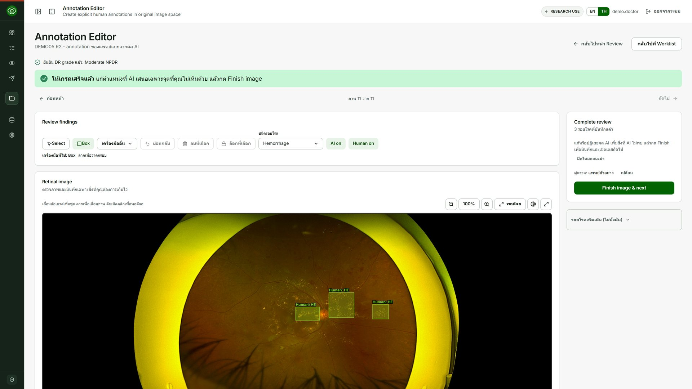
พยาบาลเตรียม (PRELIMINARY) แพทย์ตรวจและเซ็น
ระบบไม่เลือกไว้ให้ / ใช้ผลของตาข้างที่แย่กว่า
แก้รายงานที่เซ็นแล้ว ระบบเก็บฉบับเดิมไว้
พยาบาลกรอกเกรดเบื้องต้น
ผู้ให้เกรดเลือก Refer หรือ Not refer
แพทย์เซ็น แล้ว Print เป็น PDF
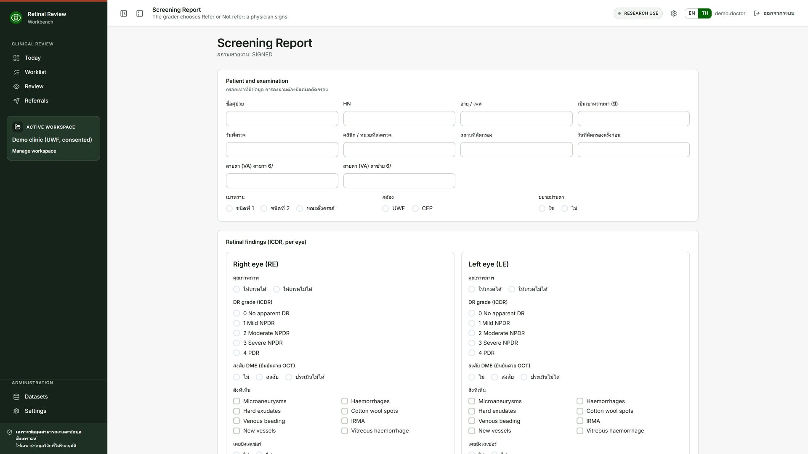
เฉพาะรายงานที่เซ็นแล้วและเลือก Refer หรือภาพ ungradable
Patient, ICDR grade รายตา และ ServiceRequest
file drop หรือ HTTPS webhook ไป host ที่ผู้ดูแลกำหนด / หนึ่งครั้งต่อการกด Send
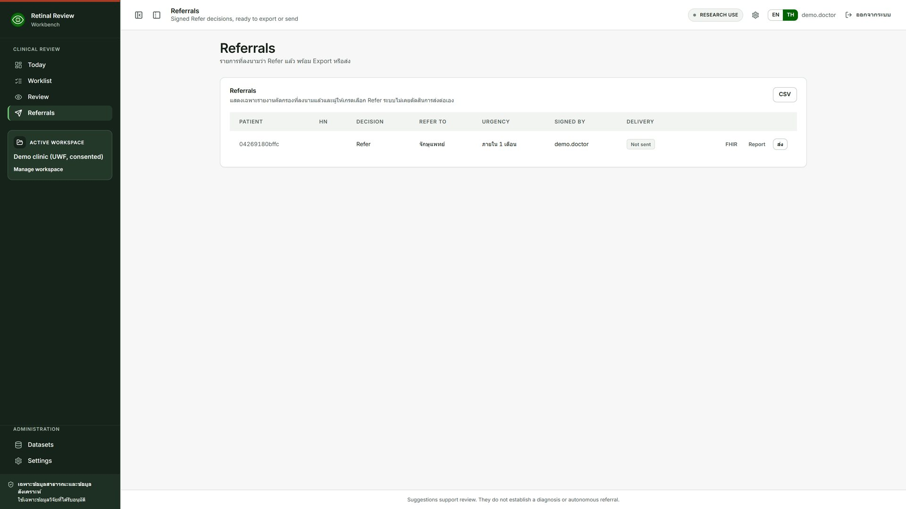
ภาพต้นฉบับไม่ถูกย้าย / ทุกโฟลเดอร์มี manifest แบบ CSV และ JSON
จัดตามเกรดที่แพทย์ยืนยันแล้ว
แยกต่างหาก ไม่ใช่เกรดจริง และไม่ใช่ label ฝึกโมเดล
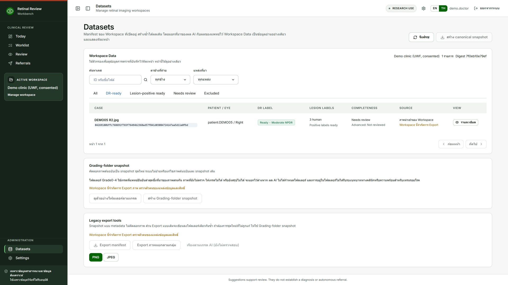
จักษุแพทย์เลือกภาพเอง คำแนะนำของ AI ยังซ่อนอยู่
เปลี่ยนเกรดได้ ระบบเก็บทั้งสองค่าพร้อมที่มา
ไม่มีข้อความว่า AI ไม่เห็นด้วย / เก็บแยกจากเกรดคัดกรอง
เดโมสดจากเครื่องของเจ้าของโครงการ สำหรับพัฒนา เดโม และกรณีฉุกเฉิน
ใช้ GPU0 เท่านั้น / GPU child ปิดเองเมื่อว่างราว 300 วินาที / ไม่พิมพ์ token
review, postgres และ https บนเครื่องเดียว / AI server เชื่อมผ่าน URL
Windows + Docker Desktop: ดับเบิลคลิกครั้งเดียว
เปิด Docker Desktop ให้ขึ้น Running
ตอบสองคำถาม: โฟลเดอร์ภาพ และที่อยู่ AI server
ระบบสร้างรหัสผ่านสุ่ม เก็บในไฟล์ส่วนตัว
ตั้งผู้ดูแลคนแรก แล้วเปิด https://localhost/app/
ทุกอย่างอยู่ในเครือข่ายโรงพยาบาล ไม่ต้องใช้ internet
preflight ของ profile นี้รับเฉพาะ RTX 3090 / weights ตรวจ hash ก่อน start
อ่าน IT_CHECKLIST.md / ถามสี่คำถาม สร้างรหัสผ่านบนเครื่อง เริ่มระบบ และสร้างผู้ดูแล
ทีมเปิดลิงก์บนโดเมนของเจ้าของโครงการ
Cloudflare ส่งรหัสครั้งเดียวทางอีเมล แล้ว app ยังขอ sign-in ของตัวเอง
ห้ามภาพผู้ป่วย แม้มี consent / แชร์เฉพาะตอนเปิดหน้าต่าง tunnel
docs/developer/DR_TRAIN_ACCESS.md
clone แล้วรัน test แบบ offline
model ถูก mock ใน test
รัน app ด้วยภาพ public หรือ Docker package
Tailscale ไปได้แค่ SSH ของ dr-train
บัญชีจำกัด forward ได้แค่ gateway
personal model token เก็บในเครื่องตัวเอง
เครื่อง Linux GPU ที่บัญชีรัน Docker ได้
ทดสอบด้วยภาพ public หรือมี consent
แก้รอบแรกแล้ว ที่เหลือบันทึกพร้อมขั้นต่อไป
AI server และ Workspace แก้ได้เฉพาะ admin
ปลายทาง referral ต้องเป็น host ที่ operator กำหนด
researcher ไม่เห็นชื่อผู้ป่วยและ HN
Model API ไม่บังคับ token ถ้าไม่ได้ตั้ง
backup ยังเป็น plain text
cookie ยังไม่มี Secure flag
ผลทั้งหมดยังเป็น TEST_ONLY / single-user commissioning บน dr-train
One-click demo กับ dr-train
Docker package 1 และ 2
Screening report และ Referral outbox
Gold-100 แบบ blind
Personal model token และ security audit
SETUP_WEB_APP.bat, install.sh, Cloudflare Access kit
สิ่งที่ต้องทำต่อ และสิ่งที่เลื่อนไป phase 2
รัน package 2 บน RTX 3090 จริง ด้วยภาพ public หรือมี consent
ออกสิทธิ์ dr-train รายบุคคล
แพทย์ตรวจถ้อยคำไทยใน GradeGuide และฟอร์มรายงาน
ปิด audit open items
กฎแนะนำการส่งต่อ (ต้องมีตารางที่ลงนาม)
Vessel segmentation และ model training
DME diagnosis
เชื่อม login ของโรงพยาบาล
README.mdเริ่มต้นและติดตั้ง
docs/ARCHITECTURE.mdภาพรวมระบบ
docs/developer/configuration, dr-train, security
deployment/*/README.mdweb app, hospital, Cloudflare